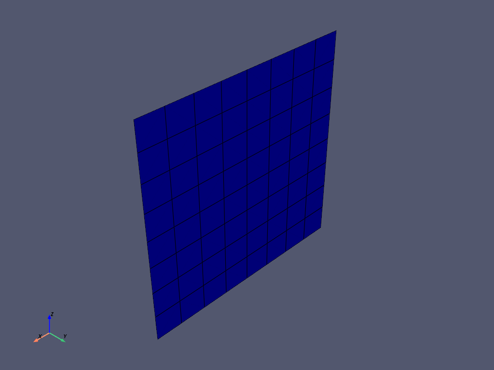

Note
Go to the end to download the full example code
Basic sandwich panel#
Define a Composite Lay-up for a sandwich panel with PyACP. This example shows just the pyACP part of the setup. For a complete Composite analysis, see the Basic PyACP Example example
Import standard library and third-party dependencies.
import pathlib
import tempfile
Import pyACP dependencies
from ansys.acp.core import (
ACPWorkflow,
FabricWithAngle,
Lamina,
PlyType,
get_directions_plotter,
launch_acp,
print_model,
)
from ansys.acp.core.example_helpers import ExampleKeys, get_example_file
from ansys.acp.core.material_property_sets import ConstantEngineeringConstants, ConstantStrainLimits
Start ACP and load the model#
Get example file from server.
tempdir = tempfile.TemporaryDirectory()
WORKING_DIR = pathlib.Path(tempdir.name)
input_file = get_example_file(ExampleKeys.BASIC_FLAT_PLATE_DAT, WORKING_DIR)
Launch the PyACP server and connect to it.
acp = launch_acp()
Define the input file and instantiate an ACPWorkflow. The ACPWorkflow class provides convenience methods which simplify the file handling. It automatically creates a model based on the input file.
workflow = ACPWorkflow.from_cdb_or_dat_file(
acp=acp,
cdb_or_dat_file_path=input_file,
local_working_directory=WORKING_DIR,
)
model = workflow.model
print(workflow.working_directory.path)
print(model.unit_system)
/tmp/tmp0plx6njv
mks
Visualize the loaded mesh.

Create the sandwich materials#
Create the UD material and its corresponding fabric.
engineering_constants_ud = ConstantEngineeringConstants.from_orthotropic_constants(
E1=5e10, E2=1e10, E3=1e10, nu12=0.28, nu13=0.28, nu23=0.3, G12=5e9, G23=4e9, G31=4e9
)
strain_limit = 0.01
strain_limits = ConstantStrainLimits.from_orthotropic_constants(
eXc=-strain_limit,
eYc=-strain_limit,
eZc=-strain_limit,
eXt=strain_limit,
eYt=strain_limit,
eZt=strain_limit,
eSxy=strain_limit,
eSyz=strain_limit,
eSxz=strain_limit,
)
ud_material = model.create_material(
name="UD",
ply_type=PlyType.REGULAR,
engineering_constants=engineering_constants_ud,
strain_limits=strain_limits,
)
ud_fabric = model.create_fabric(name="UD", material=ud_material, thickness=0.002)
Create a multi-axial Stackup and a Sublaminate. Sublaminates and Stackups help to quickly build repeating laminates.
biax_carbon_ud = model.create_stackup(
name="Biax_Carbon_UD",
fabrics=(
FabricWithAngle(ud_fabric, -45),
FabricWithAngle(ud_fabric, 45),
),
)
sublaminate = model.create_sublaminate(
name="Sublaminate",
materials=(
Lamina(biax_carbon_ud, 0),
Lamina(ud_fabric, 90),
Lamina(biax_carbon_ud, 0),
),
)
Create the Core Material and its corresponding Fabric.
engineering_constants_core = ConstantEngineeringConstants.from_isotropic_constants(E=8.5e7, nu=0.3)
core = model.create_material(
name="Core",
ply_type=PlyType.ISOTROPIC_HOMOGENEOUS_CORE,
engineering_constants=engineering_constants_core,
strain_limits=strain_limits,
)
core_fabric = model.create_fabric(name="core", material=ud_material, thickness=0.015)
Create the Layup#
Define a rosette and an oriented selection set and plot the orientations.
rosette = model.create_rosette(origin=(0.0, 0.0, 0.0), dir1=(1.0, 0.0, 0.0), dir2=(0.0, 1.0, 0.0))
oss = model.create_oriented_selection_set(
name="oss",
orientation_point=(0.0, 0.0, 0.0),
orientation_direction=(0.0, 1.0, 0),
element_sets=[model.element_sets["All_Elements"]],
rosettes=[rosette],
)
model.update()
assert oss.elemental_data.orientation is not None
plotter = get_directions_plotter(model=model, components=[oss.elemental_data.orientation])
plotter.show()

Create the modeling plies which define the layup of the sandwich panel.
modeling_group = model.create_modeling_group(name="modeling_group")
bottom_ply = modeling_group.create_modeling_ply(
name="bottom_ply",
ply_angle=0,
ply_material=sublaminate,
oriented_selection_sets=[oss],
)
core_ply = modeling_group.create_modeling_ply(
name="core_ply",
ply_angle=0,
ply_material=core_fabric,
oriented_selection_sets=[oss],
)
top_ply = modeling_group.create_modeling_ply(
name="top_ply",
ply_angle=90,
ply_material=ud_fabric,
oriented_selection_sets=[oss],
number_of_layers=3,
)
Update and print the model.
model.update()
print_model(workflow.model)
Model
Material Data
Materials
1
UD
Core
Fabrics
UD
core
Stackups
Biax_Carbon_UD
Sublaminates
Sublaminate
Element Sets
All_Elements
Edge Sets
_FIXEDSU
Geometry
Rosettes
12
Rosette
Lookup Tables
Selection Rules
Oriented Selection Sets
oss
Modeling Groups
modeling_group
bottom_ply
ProductionPly
P1L1__bottom_ply
P1L2__bottom_ply
ProductionPly.2
P2L1__bottom_ply
ProductionPly.3
P3L1__bottom_ply
P3L2__bottom_ply
core_ply
ProductionPly.4
P1L1__core_ply
top_ply
ProductionPly.5
P1L1__top_ply
ProductionPly.6
P2L1__top_ply
ProductionPly.7
P3L1__top_ply
Total running time of the script: ( 0 minutes 9.576 seconds)